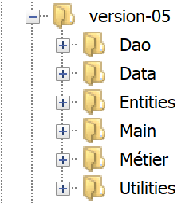
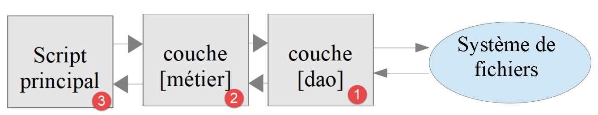
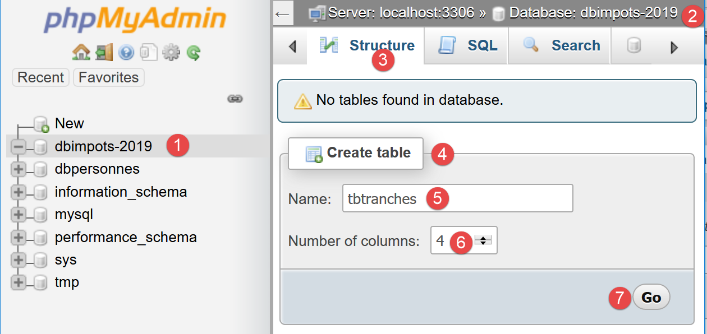
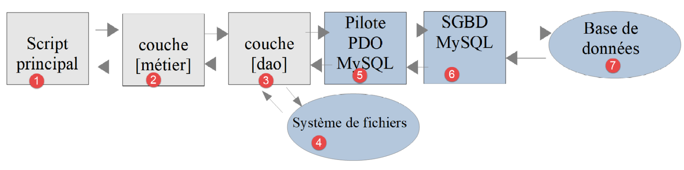
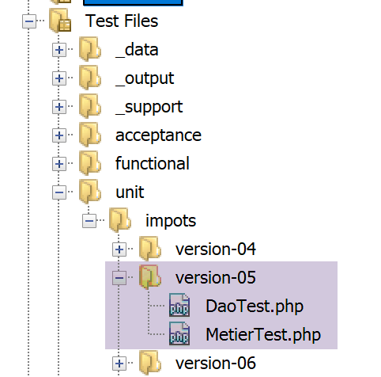

13. 实践练习——第5版

我们已经编写了该练习的多个版本。最新版本采用了分层架构：

[dao] 层实现了 [InterfaceDao] 接口。我们构建了一个实现该接口的类：
- [DaoImportsWithTaxAdminDataInJsonFile]，该类从 JSON 文件中读取税务数据；
我们将通过一个名为 [DaoImportsWithTaxAdminDataInDatabase] 的新类来实现 [InterfaceDao] 接口，该类将从 MySQL 数据库中检索税务管理数据。
13.1. 创建 [dbimpots-2019] 数据库
参照“链接”部分中的示例，我们创建一个名为 [dbimpots-2019] 的 MySQL 数据库，所有者为 [admimpots]，密码为 [mdpimpots]：

- 在上文的 [1-4] 中，我们可以看到数据库 [dbimpots-2019]，该数据库目前尚无表；

- 在上方的 [1-5] 中，我们可以看到用户 [admimpots] 对 [dbimpots-2019] 数据库拥有完全权限。但这里未显示的是，该用户的密码为 [admimpots]；
现在我们将创建表 [tbtranches]，该表将包含税率区间：

- 在 [1-7] 中，我们创建了一个名为 [tbtranches] 的表，包含 4 个列；

- 在 [3-6] 中，我们定义了一个名为 [id]（3）的列，类型为整数 [int]（4），该列将作为表的主键 [6]，并由数据库管理系统 [DBMS] 自动递增 [5]。这意味着在插入数据时，MySQL 将自行管理主键值。 它会将值 1 分配给首次插入的主键，然后将 2 分配给下一次，依此类推；
- 在 [7] 中，向导提供了主键的额外配置选项。此处，我们直接接受 [7] 默认值；

- 在 [8-16] 中，我们定义表的其他三列：
- [limits] (8)，一个包含 10 位数字（9）且有 2 位小数（10）的小数，将包含税率表第 17 列的数值；
- [coeffR] (11)，一个6位十进制数 (12)，小数点后2位 (13)，将包含税率表第18列的数值；
- [coeffN] (14)，类型为10位十进制数（15），含2位小数（16），将包含税率表第19列的元素；
验证此结构后，我们得到以下结果：

- 在 [5] 中，钥匙图标表示 [id] 列是主键。我们还可以看到，该主键的值类型为整数 (6)，且由 MySQL 自动管理（自动递增）；
与创建 [tbtranches] 表相同，我们构建 [tbconstantes] 表，该表将包含税费计算中使用的常量：

可以将数据库结构导出为文本文件，以一系列 SQL 语句的形式呈现：

选项 [5] 仅导出数据库结构，不包含其内容。在本例中，数据库目前尚无任何内容。


选项 [11] 将生成以下 SQL 文件 [dbimpots-2019.sql]：
-- phpMyAdmin SQL Dump
-- version 4.8.5
-- https://www.phpmyadmin.net/
--
-- Host: localhost:3306
-- Generation Time: Jun 30, 2019 at 01:10 PM
-- Server version: 5.7.24
-- PHP Version: 7.2.11
SET SQL_MODE = "NO_AUTO_VALUE_ON_ZERO";
SET AUTOCOMMIT = 0;
START TRANSACTION;
SET time_zone = "+00:00";
/*!40101 SET @OLD_CHARACTER_SET_CLIENT=@@CHARACTER_SET_CLIENT */;
/*!40101 SET @OLD_CHARACTER_SET_RESULTS=@@CHARACTER_SET_RESULTS */;
/*!40101 SET @OLD_COLLATION_CONNECTION=@@COLLATION_CONNECTION */;
/*!40101 SET NAMES utf8mb4 */;
--
-- Database: `dbimpots-2019`
--
CREATE DATABASE IF NOT EXISTS `dbimpots-2019` DEFAULT CHARACTER SET utf8 COLLATE utf8_general_ci;
USE `dbimpots-2019`;
-- --------------------------------------------------------
--
-- Table structure for table `tbconstantes`
--
DROP TABLE IF EXISTS `tbconstantes`;
CREATE TABLE `tbconstantes` (
`id` int(11) NOT NULL,
`plafondQfDemiPart` decimal(10,2) NOT NULL,
`plafondRevenusCelibatairePourReduction` decimal(10,2) NOT NULL,
`plafondRevenusCouplePourReduction` decimal(10,2) NOT NULL,
`valeurReducDemiPart` decimal(10,2) NOT NULL,
`plafondDecoteCelibataire` decimal(10,2) NOT NULL,
`plafondDecoteCouple` decimal(10,2) NOT NULL,
`plafondImpotCelibatairePourDecote` decimal(10,2) NOT NULL,
`plafondImpotCouplePourDecote` decimal(10,2) NOT NULL,
`abattementDixPourcentMax` decimal(10,2) NOT NULL,
`abattementDixPourcentMin` decimal(10,2) NOT NULL
) ENGINE=InnoDB DEFAULT CHARSET=utf8;
-- --------------------------------------------------------
--
-- Table structure for table `tbtranches`
--
DROP TABLE IF EXISTS `tbtranches`;
CREATE TABLE `tbtranches` (
`id` int(11) NOT NULL,
`limites` decimal(10,2) NOT NULL,
`coeffR` decimal(10,2) NOT NULL,
`coeffN` decimal(10,2) NOT NULL
) ENGINE=InnoDB DEFAULT CHARSET=utf8;
--
-- Indexes for dumped tables
--
--
-- Indexes for table `tbconstantes`
--
ALTER TABLE `tbconstantes`
ADD PRIMARY KEY (`id`);
--
-- Indexes for table `tbtranches`
--
ALTER TABLE `tbtranches`
ADD PRIMARY KEY (`id`);
--
-- AUTO_INCREMENT for dumped tables
--
--
-- AUTO_INCREMENT for table `tbconstantes`
--
ALTER TABLE `tbconstantes`
MODIFY `id` int(11) NOT NULL AUTO_INCREMENT;
--
-- AUTO_INCREMENT for table `tbtranches`
--
ALTER TABLE `tbtranches`
MODIFY `id` int(11) NOT NULL AUTO_INCREMENT;
COMMIT;
/*!40101 SET CHARACTER_SET_CLIENT=@OLD_CHARACTER_SET_CLIENT */;
/*!40101 SET CHARACTER_SET_RESULTS=@OLD_CHARACTER_SET_RESULTS */;
/*!40101 SET COLLATION_CONNECTION=@OLD_COLLATION_CONNECTION */;
如果 [dbimpots-2019] 数据库已被删除或损坏，您可以使用此 SQL 文件重新生成该数据库。重新生成前无需手动删除数据库，因为 SQL 脚本会自动处理此步骤：


13.2. 代码组织
为了更好地说明我们正在编写的各种 PHP 脚本的作用，我们将代码组织到以下文件夹中：

- 在 [1] 中，版本 05 的概述；
- 在[2]中，应用实体，即各层之间交换的实体；
- 在[3]中，指应用程序实用程序；
- 在[4]中，指应用程序使用或生成的数据。在此，我们决定仅使用JSON格式作为文本文件。这种格式具有以下优势：
- 它们被许多工具所识别；
- 这些工具支持语法高亮。此外，JSON 具有严格的规则。当这些规则未被遵守时，工具会进行标记。例如，基本文本文件中常见的错误是使用大写或小写字母 O 代替数字 0。如果发生此类错误，系统将进行标记。在 JSON 代码中：
"plafondRevenusCouplePourReduction": 42O74
其中 [42074] 中的零被无意间写成了大写字母 O，NetBeans 会标记此错误：

实际上，NetBeans 能识别大写字母 O，因此将 [49O74] 视为字符串。它推断语法应为 [4-5]：字符串 [47O74] 应加引号。这样，开发者的注意力就被吸引到该错误上，并可进行修正：要么添加引号，要么将 O 替换为数字 0；
版本 05 的其他功能如下：

- 在 [6] 中，[Dao] 层的接口和类；
- 在 [7] 中，[business] 层的接口和类；
- 在 [8] 中，版本 05 的主要脚本；
05 版有两个明确的目标：
- 将 JSON 文件 [Data/txadmindata.json] 的内容导入 MySQL 数据库 [dbimpots-2019]；
- 利用现从 MySQL 数据库 [dbimpots-2019] 获取的税务数据实现税费计算；
我们将分别处理这两个目标。
13.3. 填充数据库 [dbimpots-2019]
13.3.1. 目标
文本文件 taxadmindata.json 包含来自税务机关的数据：
{
"limites": [
9964,
27519,
73779,
156244,
0
],
"coeffR": [
0,
0.14,
0.3,
0.41,
0.45
],
"coeffN": [
0,
1394.96,
5798,
13913.69,
20163.45
],
"plafondQfDemiPart": 1551,
"plafondRevenusCelibatairePourReduction": 21037,
"plafondRevenusCouplePourReduction": 42074,
"valeurReducDemiPart": 3797,
"plafondDecoteCelibataire": 1196,
"plafondDecoteCouple": 1970,
"plafondImpotCouplePourDecote": 2627,
"plafondImpotCelibatairePourDecote": 1595,
"abattementDixPourcentMax": 12502,
"abattementDixPourcentMin": 437
}
我们的目标是将这些数据导入之前创建的 MySQL 数据库 [dbimpots-2019] 中。
13.3.2. 实体

[Database] 实体将用于封装来自以下 JSON 文件 [database.json] 的数据：
{
"dsn": "mysql:host=localhost;dbname=dbimpots-2019",
"id": "admimpots",
"pwd": "mdpimpots",
"tableTranches": "tbtranches",
"colLimites": "limites",
"colCoeffR": "coeffr",
"colCoeffN": "coeffn",
"tableConstantes": "tbconstantes",
"colPlafondQfDemiPart": "plafondQfDemiPart",
"colPlafondRevenusCelibatairePourReduction": "plafondRevenusCelibatairePourReduction",
"colPlafondRevenusCouplePourReduction": "plafondRevenusCouplePourReduction",
"colValeurReducDemiPart": "valeurReducDemiPart",
"colPlafondDecoteCelibataire": "plafondDecoteCelibataire",
"colPlafondDecoteCouple": "plafondDecoteCouple",
"colPlafondImpotCelibatairePourDecote": "plafondImpotCelibatairePourDecote",
"colPlafondImpotCouplePourDecote": "plafondImpotCouplePourDecote",
"colAbattementDixPourcentMax": "abattementDixPourcentMax",
"colAbattementDixPourcentMin": "abattementDixPourcentMin"
}
[TaxAdminData] 实体将用于封装来自以下 JSON 文件 [taxadmindata.json] 的数据：
{
"limites": [
9964,
27519,
73779,
156244,
0
],
"coeffR": [
0,
0.14,
0.3,
0.41,
0.45
],
"coeffN": [
0,
1394.96,
5798,
13913.69,
20163.45
],
"plafondQfDemiPart": 1551,
"plafondRevenusCelibatairePourReduction": 21037,
"plafondRevenusCouplePourReduction": 42074,
"valeurReducDemiPart": 3797,
"plafondDecoteCelibataire": 1196,
"plafondDecoteCouple": 1970,
"plafondImpotCouplePourDecote": 2627,
"plafondImpotCelibatairePourDecote": 1595,
"abattementDixPourcentMax": 12502,
"abattementDixPourcentMin": 437
}
[TaxPayerData] 实体将用于封装来自以下 JSON 文件 [taxpayerdata.json] 的数据：
[
{
"marié": "oui",
"enfants": 2,
"salaire": 55555
},
{
"marié": "ouix",
"enfants": "2x",
"salaire": "55555x"
},
{
"marié": "oui",
"enfants": "2",
"salaire": 50000
},
{
"marié": "oui",
"enfants": 3,
"salaire": 50000
},
{
"marié": "non",
"enfants": 2,
"salaire": 100000
},
{
"marié": "non",
"enfants": 3,
"salaire": 100000
},
{
"marié": "oui",
"enfants": 3,
"salaire": 100000
},
{
"marié": "oui",
"enfants": 5,
"salaire": 100000
},
{
"marié": "non",
"enfants": 0,
"salaire": 100000
},
{
"marié": "oui",
"enfants": 2,
"salaire": 30000
},
{
"marié": "non",
"enfants": 0,
"salaire": 200000
},
{
"marié": "oui",
"enfants": 3,
"salaire": 20000
}
]
13.3.2.1. 基类 [BaseEntity]
为了简化实体代码，我们将采用以下规则：实体的属性名称应与该实体旨在封装的 JSON 文件中的属性名称保持一致。基于此规则，实体 [Database、TaxAdminData、TaxPayerData] 具有共同特征，这些特征可以归纳到一个父类中。该父类即为以下 [BaseEntity] 类：
<?php
namespace Application;
class BaseEntity {
// attribute
protected $arrayOfAttributes;
// initialization from a jSON file
public function setFromJsonFile(string $jsonFilename) {
// retrieve the contents of the tax data file
$fileContents = \file_get_contents($jsonFilename);
$erreur = FALSE;
// mistake?
if (!$fileContents) {
// we note the error
$erreur = TRUE;
$message = "Le fichier des données [$jsonFilename] n'existe pas";
}
if (!$erreur) {
// retrieve the jSON code from the configuration file in an associative array
$this->arrayOfAttributes = \json_decode($fileContents, true);
// mistake?
if ($this->arrayOfAttributes === FALSE) {
// we note the error
$erreur = TRUE;
$message = "Le fichier de données jSON [$jsonFilename] n'a pu être exploité correctement";
}
}
// mistake?
if ($erreur) {
// throw an exception
throw new ExceptionImpots($message);
}
// initialization of class attributes
foreach ($this->arrayOfAttributes as $key => $value) {
$this->$key = $value;
}
// we return the object
return $this;
}
public function checkForAllAttributes() {
// check that all keys have been initialized
foreach (\array_keys($this->arrayOfAttributes) as $key) {
if ($key !== "arrayOfAttributes" && !isset($this->$key)) {
throw new ExceptionImpots("L'attribut [$key] de la classe "
. get_class($this) . " n'a pas été initialisé");
}
}
}
public function setFromArrayOfAttributes(array $arrayOfAttributes) {
// initialize certain attributes of the
foreach ($arrayOfAttributes as $key => $value) {
$this->$key = $value;
}
// object is returned
return $this;
}
// toString
public function __toString() {
// object attributes
$arrayOfAttributes = \get_object_vars($this);
// remove parent class attribute
unset($arrayOfAttributes["arrayOfAttributes"]);
// object's Json string
return \json_encode($arrayOfAttributes, JSON_UNESCAPED_UNICODE);
}
// getter
public function getArrayOfAttributes() {
return $this->arrayOfAttributes;
}
}
评论
- 第 5 行：[BaseEntity] 类旨在被 [Database、TaxAdminData、TaxPayerData] 类继承；
- 第 7 行：[$arrayOfAttributes] 属性是一个数组，包含继承自 [BaseEntity] 的子类的所有属性及其值；
- 第 9–41 行：通过作为参数传递的 JSON 文件 [$jsonFilename] 初始化 [$arrayOfAttributes] 属性。若无法读取 JSON 文件或该文件不是有效的 JSON 文件，则抛出 [ExceptionImpot] 异常；
- 第 36–38 行：这是子类执行时的特殊代码。在此情况下，[$this] 代表子类 [Database, TaxAdminData, TaxPayerData] 的实例，且在该场景中，第 36–38 行会初始化该子类的属性，前提是这些属性具有受保护（或公共）的可见性（参见相关章节）。 我们注意到，实体 [Database、TaxAdminData、TaxPayerData] 的属性与其封装的 JSON 文件中的属性完全一致。最后，[setFromJsonFile] 方法允许子类通过 JSON 文件初始化自身；
- 第 40 行：如果 [setFromJsonFile] 方法是由子类调用的，则对象 [$this] 将被设置为该子类的实例；
- 第 43–51 行：[checkForAllAttributes] 方法允许子类验证其所有属性是否已初始化。若未初始化，则抛出 [ExceptionImpots] 异常。该方法使子类能够验证其 JSON 文件是否遗漏了某些属性；
- 第 53–60 行：[setFromArrayOfAttributes] 方法允许子类从一个关联数组中初始化其全部或部分属性，该数组的键名与待初始化的子类属性名称相同；
- 第 63–70 行：[__toString] 方法提供子类的 JSON 表示形式；
13.3.2.2. [Database] 实体
[Database] 实体如下：
<?php
namespace Application;
class Database extends BaseEntity {
// attributes
protected $dsn;
protected $id;
protected $pwd;
protected $tableTranches;
protected $colLimites;
protected $colCoeffR;
protected $colCoeffN;
protected $tableConstantes;
protected $colPlafondQfDemiPart;
protected $colPlafondRevenusCelibatairePourReduction;
protected $colPlafondRevenusCouplePourReduction;
protected $colValeurReducDemiPart;
protected $colPlafondDecoteCelibataire;
protected $colPlafondDecoteCouple;
protected $colPlafondImpotCelibatairePourDecote;
protected $colPlafondImpotCouplePourDecote;
protected $colAbattementDixPourcentMax;
protected $colAbattementDixPourcentMin;
…
}
[Database] 类用于封装来自以下 JSON 文件 [database.json] 的数据：
{
"dsn": "mysql:host=localhost;dbname=dbimpots-2019",
"id": "admimpots",
"pwd": "mdpimpots",
"tableTranches": "tbtranches",
"colLimites": "limites",
"colCoeffR": "coeffr",
"colCoeffN": "coeffn",
"tableConstantes": "tbconstantes",
"colPlafondQfDemiPart": "plafondQfDemiPart",
"colPlafondRevenusCelibatairePourReduction": "plafondRevenusCelibatairePourReduction",
"colPlafondRevenusCouplePourReduction": "plafondRevenusCouplePourReduction",
"colValeurReducDemiPart": "valeurReducDemiPart",
"colPlafondDecoteCelibataire": "plafondDecoteCelibataire",
"colPlafondDecoteCouple": "plafondDecoteCouple",
"colPlafondImpotCelibatairePourDecote": "plafondImpotCelibatairePourDecote",
"colPlafondImpotCouplePourDecote": "plafondImpotCouplePourDecote",
"colAbattementDixPourcentMax": "abattementDixPourcentMax",
"colAbattementDixPourcentMin": "abattementDixPourcentMin"
}
该类和 JSON 文件具有相同的属性。这些属性描述了 MySQL 数据库 [dbimpots-2019] 的特征：
dsn | 数据库 DSN 名称 |
id | 数据库所有者 |
pwd | 其密码 |
tableTranches | 包含税率区间的表的名称 |
colLimits colRate colCoeffN | [tableTranches] 表中的列名 |
tableConstants | 包含税额计算常数的表的名称 |
colIncomeCeilingForHalfShare 单身减免的收入上限 colIncomeLimitCoupleForReduction 半额减免值 单身纳税抵免限额 col夫妻扣除上限 单身扣除收入上限 col夫妻扣除税额上限 col最高10%扣除额 col最低10%扣除额 | [tableConstants] 表中包含税费计算常数的列名 |
既然我们已经知道表和列的名称，且它们不太可能更改，为何还要为它们命名？ 继 MySQL 数据库管理系统之后，我们将使用 PostgreSQL 数据库管理系统来存储税务管理数据。然而，PostgreSQL 的列名和表名并不遵循与 MySQL 相同的命名规则。我们将不得不使用不同的名称。对于其他数据库管理系统也是如此。如果我们希望代码在不同数据库管理系统之间具有可移植性，最好使用参数，而不是硬编码的表名和列名。
让我们回到 [Database] 类的代码：
<?php
namespace Application;
class Database extends BaseEntity {
// attributes
protected $dsn;
protected $id;
protected $pwd;
protected $tableTranches;
protected $colLimites;
protected $colCoeffR;
protected $colCoeffN;
protected $tableConstantes;
protected $colPlafondQfDemiPart;
protected $colPlafondRevenusCelibatairePourReduction;
protected $colPlafondRevenusCouplePourReduction;
protected $colValeurReducDemiPart;
protected $colPlafondDecoteCelibataire;
protected $colPlafondDecoteCouple;
protected $colPlafondImpotCelibatairePourDecote;
protected $colPlafondImpotCouplePourDecote;
protected $colAbattementDixPourcentMax;
protected $colAbattementDixPourcentMin;
// setter
// initialization
public function setFromJsonFile(string $jsonFilename) {
// parent
parent::setFromJsonFile($jsonFilename);
// check that all attributes have been initialized
parent::checkForAllAttributes();
// object is returned
return $this;
}
// getters and setters
public function getDsn() {
return $this->dsn;
}
…
public function setDsn($dsn) {
$this->dsn = $dsn;
return $this;
}
…
}
评论
- 第 7–24 行：所有类属性均具有 [protected] 访问权限。这是为了使其能够从父类 [BaseEntity] 进行修改（参见相关章节）；
- 第 28–35 行：[setFromJsonFile] 方法允许根据作为参数传递的 JSON 文件内容初始化 [Database] 类的属性。JSON 文件中的属性与 [Database] 类中的属性必须完全一致。如果 JSON 文件无法使用，将抛出异常；
- 第 30 行：父类执行初始化操作；
- 第 32 行：要求父类验证 [Database] 类的所有属性是否已初始化。若未初始化，则抛出异常；
- 第 34 行：返回刚刚初始化的 [Database] 实例；
- 第 37 行及之后：该类属性的 getter 和 setter 方法；
13.3.2.3. [TaxAdminData] 实体
[TaxAdminData] 实体如下：
<?php
namespace Application;
class TaxAdminData extends BaseEntity {
// tax brackets
protected $limites;
protected $coeffR;
protected $coeffN;
// tax calculation constants
protected $plafondQfDemiPart;
protected $plafondRevenusCelibatairePourReduction;
protected $plafondRevenusCouplePourReduction;
protected $valeurReducDemiPart;
protected $plafondDecoteCelibataire;
protected $plafondDecoteCouple;
protected $plafondImpotCouplePourDecote;
protected $plafondImpotCelibatairePourDecote;
protected $abattementDixPourcentMax;
protected $abattementDixPourcentMin;
…
}
[TaxAdminData] 类用于封装来自以下 JSON 文件 [taxadmindata.json] 的数据：
{
"limites": [
9964,
27519,
73779,
156244,
0
],
"coeffR": [
0,
0.14,
0.3,
0.41,
0.45
],
"coeffN": [
0,
1394.96,
5798,
13913.69,
20163.45
],
"plafondQfDemiPart": 1551,
"plafondRevenusCelibatairePourReduction": 21037,
"plafondRevenusCouplePourReduction": 42074,
"valeurReducDemiPart": 3797,
"plafondDecoteCelibataire": 1196,
"plafondDecoteCouple": 1970,
"plafondImpotCouplePourDecote": 2627,
"plafondImpotCelibatairePourDecote": 1595,
"abattementDixPourcentMax": 12502,
"abattementDixPourcentMin": 437
}
该类和 JSON 文件具有相同的属性。这些属性代表税务管理数据。[TaxAdminData] 类的其余代码如下：
<?php
namespace Application;
class TaxAdminData extends BaseEntity {
// tax brackets
protected $limites;
protected $coeffR;
protected $coeffN;
// tax calculation constants
protected $plafondQfDemiPart;
protected $plafondRevenusCelibatairePourReduction;
protected $plafondRevenusCouplePourReduction;
protected $valeurReducDemiPart;
protected $plafondDecoteCelibataire;
protected $plafondDecoteCouple;
protected $plafondImpotCouplePourDecote;
protected $plafondImpotCelibatairePourDecote;
protected $abattementDixPourcentMax;
protected $abattementDixPourcentMin;
// initialization
public function setFromJsonFile(string $taxAdminDataFilename) {
// parent
parent::setFromJsonFile($taxAdminDataFilename);
// check that all attributes have been initialized
parent::checkForAllAttributes();
// check that attribute values are real >=0
foreach ($this as $key => $value) {
if ($key !== "arrayOfAttributes") {
// $value must be a real number >=0 or an array of reals >=0
$result = $this->check($value);
// mistake?
if ($result->erreur) {
// throw an exception
throw new ExceptionImpots("La valeur de l'attribut [$key] est invalide");
} else {
// we note the value
$this->$key = $result->value;
}
}
}
// we return the object
return $this;
}
protected function check($value): \stdClass {
// $value is an array of string elements or a single element
if (!\is_array($value)) {
$tableau = [$value];
} else {
$tableau = $value;
}
// transform the array of strings into an array of reals
$newTableau = [];
$result = new \stdClass();
// table elements must be positive or zero decimal numbers
$modèle = '/^\s*([+]?)\s*(\d+\.\d*|\.\d+|\d+)\s*$/';
for ($i = 0; $i < count($tableau); $i ++) {
if (preg_match($modèle, $tableau[$i])) {
// put the float in newTableau
$newTableau[] = (float) $tableau[$i];
} else {
// we note the error
$result->erreur = TRUE;
// we leave
return $result;
}
}
// we return the result
$result->erreur = FALSE;
if (!\is_array($value)) {
// a single value
$result->value = $newTableau[0];
} else {
// a list of values
$result->value = $newTableau;
}
return $result;
}
// getters and setters
…
}
注释
- 第 23 行：使用 [setFromJsonFile] 方法根据作为参数传递的 JSON 文件初始化 [TaxAdminData] 类的属性。JSON 文件中的属性名称必须与类中的属性名称一致；
- 第 25 行：父类执行此任务；
- 第 27 行：要求父类验证子类的所有属性是否已初始化；
- 第 29–42 行：我们本地验证所有属性是否为正实数或为 null。此验证已在版本 03 的“链接”部分中讨论过；
13.3.3. [dao] 层
现在我们可以编写代码，将文本文件 [taxadmindata.json] 中的数据导入 MySQL 数据库 [dbimpots-2019] 的表 [tbtranches, tbconstantes] 中。我们将采用以下架构：


[dao]层将实现以下[InterfaceDao4TransferAdminDataFromFile2Database]接口：
<?php
// namespace
namespace Application;
interface InterfaceDao4TransferAdminData2Database {
public function transferAdminData2Database(): void;
}
注释
- 第 8 行：[transferAdminData2Database] 方法负责将税务管理数据存储到数据库中；
[InterfaceDao4TransferAdminData2Database] 接口将由以下 [DaoTransferAdminDataFromJsonFile2Database] 类实现：
<?php
// namespace
namespace Application;
// definition of a TransferAdminDataFromFile2DatabaseDao class
class DaoTransferAdminDataFromJsonFile2Database implements InterfaceDao4TransferAdminData2Database {
// target database attributes
private $database;
// tax administration data
private $taxAdminData;
// manufacturer
public function __construct(string $databaseFilename, string $taxAdminDataFilename) {
// save configuration
$this->database = (new Database())->setFromJsonFile($databaseFilename);
// tax data is stored
$this->taxAdminData = (new TaxAdminData())->setFromJsonFile($taxAdminDataFilename);
}
// transfers tax bracket data from a text file
// to database
public function transferAdminData2Database(): void {
// we work on the basis
$database = $this->database;
try {
// open the database connection
$connexion = new \PDO($database->getDsn(), $database->getId(), $database->getPwd());
// we want every SGBD error to trigger an exception
$connexion->setAttribute(\PDO::ATTR_ERRMODE, \PDO::ERRMODE_EXCEPTION);
// start a transaction
$connexion->beginTransaction();
// fill in the tax bracket table
$this->fillTableTranches($connexion);
// fill in the constants table
$this->fillTableConstantes($connexion);
// the transaction is completed successfully
$connexion->commit();
} catch (\PDOException $ex) {
// is there a transaction in progress?
if (isset($connexion) && $connexion->inTransaction()) {
// transaction ends in failure
$connexion->rollBack();
}
// trace the exception back to the calling code
throw new ExceptionImpots($ex->getMessage());
} finally {
// close the connection
$connexion = NULL;
}
}
// filling the tax bracket table
private function fillTableTranches($connexion): void {
…
}
// filling the constants table
private function fillTableConstantes($connexion): void {
…
}
}
评论
在这里，我们将应用本章关于MySQL的内容。
- 第 7 行：类 [DaoTransferAdminDataFromJsonFile2Database] 实现了接口 [InterfaceDao4TransferAdminData2Database]；
- 第 9 行：属性 [$database] 是类型为 [Database] 的对象，封装了来自 [database.json] 文件的数据；
- 第 11 行：属性 [$taxAdminData] 是类型为 [TaxAdminData] 的对象，封装了来自文件 [taxadmindata.json] 的数据；
- 第 14–19 行：构造函数接收文件 [database.json, taxadmindata.json] 的名称作为参数；
- 第 16 行：初始化 [$database] 属性；
- 第 18 行：初始化 [$taxAdminData] 属性；
- 第 23 行：实现了 [InterfaceDao4TransferAdminData2Database] 接口的唯一方法；
- 第 26–38 行：分两步填充 [tbtranches] 和 [tbconstantes] 表：
- 第 34 行：首先填充 [tbtranches] 表。此操作在事务内进行（第 32、38 行）。方法 [fillTableTranches]（第 55 行）一旦出现错误即抛出异常。此时，执行流程将转至第 39–50 行的 catch / finally 代码块；
- 第 36 行：表 [tbconstantes] 通过方法 [fillTableConstantes]（第 60 行）以相同方式填充；
- 第 39–47 行：代码抛出异常的情况；
- 第 41–44 行：如果存在事务，则将其回滚；
- 第 46 行：抛出类型为 [ExceptionImpots] 的异常，其消息为原始异常（类型不限）的内容；
- 第 47–50 行：在 [finally] 子句中，关闭连接；
[fillTableTranches] 方法的代码如下：
private function fillTableTranches($connexion): void {
// raccourci pour la bd
$database = $this->database;
// les données à insérer dans la base de données
$limites = $this->taxAdminData->getLimites();
$coeffR = $this->taxAdminData->getCoeffR();
$coeffN = $this->taxAdminData->getCoeffN();
// on vide la table au cas où il y aurait qq chose dedans
$statement = $connexion->prepare("delete from " . $database->getTableTranches());
$statement->execute();
// on prépare les insertions
$sqlInsert = "insert into {$database->getTableTranches()} "
. "({$database->getColLimites()}, {$database->getColCoeffR()},"
. " {$database->getColCoeffN()}) values (:limites, :coeffR, :coeffN)";
$statement = $connexion->prepare($sqlInsert);
// on exécute l'ordre préparé avec les valeurs des tranches d'impôts
for ($i = 0; $i < count($limites); $i++) {
$statement->execute([
"limites" => $limites[$i],
"coeffR" => $coeffR[$i],
"coeffN" => $coeffN[$i]]);
}
}
注释
- 第 1 行：[fillTableTranches] 方法将一个已打开的连接作为参数。我们还知道，该连接中已启动了一项事务；
- 第 5–7 行：要插入表中的值由 [$taxAdminData] 属性提供；
- 第 9–10 行：清空 [tbtranches] 表的当前内容；
- 第 12–15 行：我们准备向表中插入行。此处，我们使用 [$database] 属性提供的列名；
- 第 17–22 行：将第 12–15 行准备的插入语句执行所需次数；
[fillTableConstantes] 方法的代码如下：
private function fillTableConstantes($connexion): void {
// raccourci
$database = $this->database;
// on vide la table au cas où il y aurait qq chose dedans
$statement = $connexion->prepare("delete from {$database->getTableConstantes()}");
$statement->execute();
// on prépare l'insertion
$taxAdminData = $this->taxAdminData;
$sqlInsert = "insert into {$database->getTableConstantes()}"
. " ({$database->getColPlafondQfDemiPart()},"
. " {$database->getColPlafondRevenusCelibatairePourReduction()},"
. " {$database->getColPlafondRevenusCouplePourReduction()},"
. " {$database->getColValeurReducDemiPart()},"
. " {$database->getColPlafondDecoteCelibataire()},"
. " {$database->getColPlafondDecoteCouple()},"
. " {$database->getColPlafondImpotCelibatairePourDecote()},"
. " {$database->getColPlafondImpotCouplePourDecote()},"
. " {$database->getColAbattementDixPourcentMax()},"
. " {$database->getColAbattementDixPourcentMin()})"
. " values ("
. ":plafondQfDemiPart,"
. ":plafondRevenusCelibatairePourReduction,"
. ":plafondRevenusCouplePourReduction,"
. ":valeurReducDemiPart,"
. ":plafondDecoteCelibataire,"
. ":plafondDecoteCouple,"
. ":plafondImpotCelibatairePourDecote,"
. ":plafondImpotCouplePourDecote,"
. ":abattementDixPourcentMax,"
. ":abattementDixPourcentMin)";
$statement = $connexion->prepare($sqlInsert);
// on exécute l'ordre préparé
$statement->execute([
"plafondQfDemiPart" => $taxAdminData->getPlafondQfDemiPart(),
"plafondRevenusCelibatairePourReduction" => $taxAdminData->getPlafondRevenusCelibatairePourReduction(),
"plafondRevenusCouplePourReduction" => $taxAdminData->getPlafondRevenusCouplePourReduction(),
"valeurReducDemiPart" => $taxAdminData->getValeurReducDemiPart(),
"plafondDecoteCelibataire" => $taxAdminData->getPlafondDecoteCelibataire(),
"plafondDecoteCouple" => $taxAdminData->getPlafondDecoteCouple(),
"plafondImpotCelibatairePourDecote" => $taxAdminData->getPlafondImpotCelibatairePourDecote(),
"plafondImpotCouplePourDecote" => $taxAdminData->getPlafondImpotCouplePourDecote(),
"abattementDixPourcentMax" => $taxAdminData->getAbattementDixPourcentMax(),
"abattementDixPourcentMin" => $taxAdminData->getAbattementDixPourcentMin()
]);
}
注释
- 第 1 行：[fillTableConstantes] 方法接收一个已打开的连接作为参数。我们还知道，该连接中已启动了一项事务；
- 第 5-6 行：清空 [tbconstantes] 表；
- 第 9–31 行：准备 SQL 插入语句。该操作较为复杂，因为此次插入操作需要初始化 10 个列，且列名必须从 [$database] 属性中获取；
- 第 33–44 行：执行插入语句。仅需插入一行数据。此处代码同样因需从 [$taxAdminData] 属性中获取待插入值而变得复杂；
13.3.4. 主脚本


主脚本依赖于 [dao] 层来执行数据传输：
<?php
// strict adherence to declared types of function parameters
declare (strict_types=1);
// namespace
namespace Application;
// error handling by PHP
// ini_set("display_errors", "0");
// interface and class inclusion
require_once __DIR__ . "/../Entities/BaseEntity.php";
require_once __DIR__ . "/../Entities/TaxAdminData.php";
require_once __DIR__ . "/../Entities/TaxPayerData.php";
require_once __DIR__ . "/../Entities/Database.php";
require_once __DIR__ . "/../Entities/ExceptionImpots.php";
require_once __DIR__ . "/../Utilities/Utilitaires.php";
require_once __DIR__ . "/../Dao/InterfaceDao.php";
require_once __DIR__ . "/../Dao/TraitDao.php";
require_once __DIR__ . "/../Dao/InterfaceDao4TransferAdminData2Database.php";
require_once __DIR__ . "/../Dao/DaoTransferAdminDataFromJsonFile2Database.php";
//
// definition of constants
const DATABASE_CONFIG_FILENAME = "../Data/database.json";
const TAXADMINDATA_FILENAME = "../Data/taxadmindata.json";
//
try {
// creation of the [dao] layer
$dao = new DaoTransferAdminDataFromJsonFile2Database(DATABASE_CONFIG_FILENAME, TAXADMINDATA_FILENAME);
// data transfer to the database
$dao->transferAdminData2Database();
} catch (ExceptionImpots $ex) {
// error is displayed
print "L'erreur suivante s'est produite : " . utf8_encode($ex->getMessage()) . "\n";
}
// end
print "Terminé\n";
exit;
注释
- 第 12–21 行：加载应用程序的类和接口；
- 第 24–24 行：两个 JSON 文件；
- 第 30 行：通过将两个 JSON 文件传递给构造函数来实例化 [DAO] 层；
- 第 32 行：执行数据传输；
运行此代码后，数据库中将得到以下结果：

第 [3] 列显示了 MySQL 为主键 [id] 分配的值。编号从 1 开始。上图是在多次运行脚本后截取的。


13.4. 税费计算

13.4.1. 架构
税费计算应用程序的 04 版采用分层架构：

[dao] 层实现了 [InterfaceDao] 接口。我们构建了一个实现该接口的类：
- [DaoImpotsWithTaxAdminDataInJsonFile]，该类从 JSON 文件中读取税务数据。这就是第 04 版；
我们将使用一个新类 [DaoImpotsWithTaxAdminDataInDatabase] 来实现 [InterfaceDao] 接口，该类将从 MySQL 数据库中检索税务管理数据。与之前一样，[dao] 层将把结果和错误写入文本文件，并同样从 文本文件中检索纳税人数据。 只是这次，这些文本文件将变为 JSON 文件。此外，我们知道只要继续遵循 [InterfaceDao] 接口，[business] 层就无需进行修改。

13.4.2. [TaxPayerData] 实体

[TaxPayerData] 类用于将以下 JSON 文件 [taxpayersdata.json] 中的数据封装为一个类：
[
{
"marié": "oui",
"enfants": 2,
"salaire": 55555
},
{
"marié": "ouix",
"enfants": "2x",
"salaire": "55555x"
},
{
"marié": "oui",
"enfants": "2",
"salaire": 50000
},
{
"marié": "oui",
"enfants": 3,
"salaire": 50000
},
{
"marié": "non",
"enfants": 2,
"salaire": 100000
},
{
"marié": "non",
"enfants": 3,
"salaire": 100000
},
{
"marié": "oui",
"enfants": 3,
"salaire": 100000
},
{
"marié": "oui",
"enfants": 5,
"salaire": 100000
},
{
"marié": "non",
"enfants": 0,
"salaire": 100000
},
{
"marié": "oui",
"enfants": 2,
"salaire": 30000
},
{
"marié": "non",
"enfants": 0,
"salaire": 200000
},
{
"marié": "oui",
"enfants": 3,
"salaire": 20000
}
]
[TaxPayerData] 类的定义如下：
<?php
// namespace
namespace Application;
// data class
class TaxPayerData extends BaseEntity {
// data required to calculate the taxpayer's tax liability
protected $marié;
protected $enfants;
protected $salaire;
// tax calculation results
protected $impôt;
protected $surcôte;
protected $décôte;
protected $réduction;
protected $taux;
// getters and setters
…
}
注释
- 第 7 行：[TaxPayerData] 类继承自 [BaseEntity] 类。由于父类的方法已足够使用，[TaxPayerData] 类未定义任何自己的方法。请注意，[TaxPayerData] 类的属性与 JSON 文件 [taxpayersdata.json] 中的属性完全一致；
13.4.3. [dao] 层
13.4.3.1. [TraitDao] 特质
[TraitDao] 特质实现了 [InterfaceDao] 接口的一部分。让我们回顾一下：
<?php
// namespace
namespace Application;
interface InterfaceDao {
// reading taxpayer data
public function getTaxPayersData(string $taxPayersFilename, string $errorsFilename): array;
// reading tax data (tax brackets)
public function getTaxAdminData(): TaxAdminData;
// recording results
public function saveResults(string $resultsFilename, array $taxPayersData): void;
}
[TraitDao] 特质实现了 [InterfaceDao] 接口的 [getTaxPayersData] 和 [saveResults] 方法。由于 [TaxPayerData] 实体的定义在 04 版和 05 版之间发生了变化，我们需要更新 [TraitDao] 中的代码：
<?php
// namespace
namespace Application;
trait TraitDao {
// reading taxpayer data
public function getTaxPayersData(string $taxPayersFilename, string $errorsFilename): array {
// retrieve taxpayer data in a table
$baseEntity = new BaseEntity();
$baseEntity->setFromJsonFile($taxPayersFilename);
$arrayOfAttributes = $baseEntity->getArrayOfAttributes();
// taxpayer data table
$taxPayersData = [];
// error table
$errors = [];
// we loop over the array of attributes of elements of type [TaxPayerData]
$i = 0;
foreach ($arrayOfAttributes as $attributesOfTaxPayerData) {
// check
$error = $this->check($attributesOfTaxPayerData);
if (!$error) {
// one more taxpayer
$taxPayersData[] = (new TaxPayerData())->setFrOmArrayOfAttributes($attributesOfTaxPayerData);
} else {
// an error of + - the invalid data number is noted
$error = ["numéro" => $i] + $error;
$errors[] = $error;
}
// following
$i++;
}
// save errors in a json file
$string = "";
foreach ($errors as $error) {
$string .= \json_encode($error, JSON_UNESCAPED_UNICODE) . "\n";
}
$this->saveString($errorsFilename, $string);
// function result
return $taxPayersData;
}
private function check(array $attributesOfTaxPayerData): array {
// check the data in [$taxPayerData]
// the list of erroneous attributes
$attributes = [];
// marital status must be yes or no
$marié = trim(strtolower($attributesOfTaxPayerData["marié"]));
$erreur = ($marié !== "oui" and $marié !== "non");
if ($erreur) {
// we note the error
$attributes[] = ["marié" => $marié];
}
// the number of children must be a positive integer or zero
$enfants = trim($attributesOfTaxPayerData["enfants"]);
if (!preg_match("/^\d+$/", $enfants)) {
// we note the error
$erreur = TRUE;
$attributes[] = ["enfants" => $enfants];
} else {
$enfants = (int) $enfants;
}
// the salary must be a positive integer or zero (without euro cents)
$salaire = trim($attributesOfTaxPayerData["salaire"]);
if (!preg_match("/^\d+$/", $salaire)) {
// we note the error
$erreur = TRUE;
$attributes[] = ["salaire" => $salaire];
} else {
$salaire = (int) $salaire;
}
// mistake?
if ($erreur) {
// return with error
return ["erreurs" => $attributes];
} else {
// error-free return
return [];
}
}
// recording results
public function saveResults(string $resultsFilename, array $taxPayersData): void {
// save table [$taxPayersData] in text file [$resultsFileName]
// if text file [$resultsFileName] does not exist, it is created
// construction of the jSON results chain
$string = "[" . implode(",
", $taxPayersData) . "]";
// recording this channel
$this->saveString($resultsFilename, $string);
}
// saving table results in a text file
private function saveString(string $fileName, string $data): void {
// save string [$data] in text file [$fileName]
// if text file [$fileName] does not exist, it is created
if (file_put_contents($fileName, $data) === FALSE) {
throw new ExceptionImpots("Erreur lors de l'enregistrement de données dans le fichier texte [$fileName]");
}
}
}
评论
- [TraitDao] 实现了 [InterfaceDao] 接口的 [getTaxPayersData] 方法（第 9 行）和 [saveResults] 方法（第 86 行）；
- 第 9 行：[getTaxPayersData] 方法接受以下参数：
- [$taxPayersFilename]：包含纳税人数据的 JSON 文件名称 [taxpayersdata.json]；
- [$errorsFilename]：包含错误信息的 JSON 文件名称 [errors.json]；
- 第 11–13 行：将包含纳税人数据的 JSON 文件内容转换为关联数组 [$arrayOfAttributes]。若 JSON 文件无法使用，则抛出 [ExceptionImpots] 异常；
- 第 15 行：数组 [$taxPayersData] 将包含封装在 [TaxPayerData] 类型对象中的纳税人数据；
- 第 17 行：错误信息被累积到数组 [$errors] 中；
- 第 99–33 行：构建数组 [$taxPayersData]；
- 第 22 行：在将数据封装为 [TaxPayerData] 类型之前，会先对数据进行验证。[check] 方法返回：
- 若数据有误，则返回一个包含错误属性的数组 [‘errors’=>[…]]；
- 若数据正确，则返回一个空数组；
- 第 25 行：当数据有效时，会创建一个新的 [TaxPayerData] 对象并将其添加到 [$taxPayersData] 数组中；
- 第 26–30 行：数据无效的情况。错误记录包含 JSON 文件中出错的 [TaxPayerData] 对象的 ID，以便用户定位，随后该错误被添加到 [$errors] 数组中；
- 第 35–39 行：将遇到的错误记录到第 9 行作为参数传递的 JSON 文件 [$errorsFilename] 中；
- 第 41 行：返回构建好的 [TaxPayerData] 对象数组：这是该方法的目标；
- 第 44–83 行：私有方法 [check] 验证作为第 44 行参数传递的数组 [$attributesOfTaxPayerData] 中参数 [married, children, salary] 的有效性。 如果存在任何无效属性，则将其收集到数组 [$attributes] 中（第 47、53、60、70 行），形式为数组 [‘invalid attribute’=> 无效属性的值]；
- 第 78 行：如果存在错误，则返回数组 [‘errors’=>$attributes]；
- 第 81 行：若无错误，则返回一个空的错误数组；
- 第 86–93 行：实现 [InterfaceDao] 接口的 [saveResults] 方法；
- 第 90 行：构建要保存到 JSON 文件 [$resultsFilename] 中的 JSON 字符串（该文件名作为参数在第 86 行传入）。必须从数组构建 JSON 字符串：
- 数组中的每个元素与下一个元素之间用逗号和换行符分隔；
- 整个数组用方括号 [] 包围；
- 第 92 行：将 JSON 字符串保存到 JSON 文件 [$resultsFilename] 中；
13.4.3.2. [DaoImpotsWithTaxAdminDataInDatabase] 类
类 [DaoImpotsWithTaxAdminDataInDatabase] 如下所示实现了 [InterfaceDao] 接口：
<?php
// namespace
namespace Application;
// definition of a ImpotsWithDataInDatabase class
class DaoImpotsWithTaxAdminDataInDatabase implements InterfaceDao {
// use of a line
use TraitDao;
// the TaxAdminData object containing tax bracket data
private $taxAdminData;
// the [Database] type object containing the characteristics of the BD
private $database;
// manufacturer
public function __construct(string $databaseFilename) {
// store the jSON configuration of the bd
$this->database = (new Database())->setFromJsonFile($databaseFilename);
// we prepare the attribute
$this->taxAdminData = new TaxAdminData();
try {
// open the database connection
$connexion = new \PDO(
$this->database->getDsn(),
$this->database->getId(),
$this->database->getPwd());
// we want every SGBD error to trigger an exception
$connexion->setAttribute(\PDO::ATTR_ERRMODE, \PDO::ERRMODE_EXCEPTION);
// start a transaction
$connexion->beginTransaction();
// fill in the tax bracket table
$this->getTranches($connexion);
// fill in the constants table
$this->getConstantes($connexion);
// the transaction is completed successfully
$connexion->commit();
} catch (\PDOException $ex) {
// is there a transaction in progress?
if (isset($connexion) && $connexion->inTransaction()) {
// transaction ends in failure
$connexion->rollBack();
}
// trace the exception back to the calling code
throw new ExceptionImpots($ex->getMessage());
} finally {
// close the connection
$connexion = NULL;
}
}
// reading data from the database
private function getTranches($connexion): void {
…
}
// reading the constants table
private function getConstantes($connexion): void {
…
}
// returns data for tax calculation
public function getTaxAdminData(): TaxAdminData {
return $this->taxAdminData;
}
}
评论
- 第 4 行：我们保留了 [dao] 层其他实现中已使用的命名空间；
- 第 7 行：[DaoImportsWithTaxAdminDataInDatabase] 类实现了 [InterfaceDao] 接口；
- 第 9 行：我们导入了 [TraitDao] 特质。我们知道该特质实现了接口的一部分。唯一需要实现的方法是第 62–64 行中的 [getTaxAdminData] 方法。该方法仅返回第 11 行中的私有属性 [taxAdminData]。我们可以推断出构造函数必须初始化该属性。这就是它的唯一作用；
- 第 16 行：构造函数接收一个参数 [$databaseFilename]，它是定义 MySQL 数据库 [dbimports-2019] 的 JSON 文件 [database.json] 的名称；
- 第 18 行：使用 JSON 文件 [$databaseFilename] 创建一个 [Database] 对象，该对象被构造并存储在第 13 行定义的 [$database] 属性中。如果无法正确处理 JSON 文件，则抛出 [ExceptionImpots] 异常；
- 第 20 行：创建对象 [$this→taxAdminData]，该对象必须由构造函数初始化；
- 第 22–26 行：打开数据库连接。请注意 [\PDO] 这种写法是用来引用 PHP 的 [PDO] 类。由于我们处于 [Application] 命名空间中，如果只写 [PDO]，这个相对名称会被当前命名空间作为前缀，从而得到类 [Application\PDO]，而该类并不存在；
- 第 28 行：若发生错误，数据库管理系统将抛出 \PDOException 异常（第 37 行）；
- 第 30 行：我们开始一个事务。这其实并非必要，因为仅会执行两条 SQL 语句，且这些语句不会修改数据库。不过，我们这样做是为了与其他数据库用户隔离；
- 第 32 行：通过第 52 行的私有方法 [getTranches] 读取税率区间表 [tbtranches]；
- 第 34 行：通过第 57 行的私有方法 [getConstantes] 读取计算常量表 [tbconstantes]；
- 第 36 行：若执行到此行，说明一切顺利。因此我们提交事务；
- 第 37–42 行：若到达此处，则表示发生了异常。因此，若事务正在进行中，则回滚事务（第 39–42 行）。第 44 行：为确保异常处理的一致性，我们将接收到的异常消息重新抛出，此次将其作为 [ExceptionImpots] 类型的异常；
- 第 45–48 行：无论是否发生异常，我们都关闭连接；
[getTranches] 方法如下：
private function getTranches($connexion): void {
// raccourcis
$database = $this->database;
$taxAdminData = $this->taxAdminData;
// on prépare la requête SELECT
$statement = $connexion->prepare(
"select {$database->getColLimites()}," .
" {$database->getColCoeffR()}," .
" {$database->getColCoeffN()}" .
" from {$database->getTableTranches()}");
// on exécute l'ordre préparé avec les valeurs des tranches d'impôts
$statement->execute();
// on exploite le résultat
$limites = [];
$coeffR = [];
$coeffN = [];
// remplissage des trois tableaux
while ($tranche = $statement->fetch(\PDO::FETCH_OBJ)) {
$limites[] = (float) $tranche->{$database->getColLimites()};
$coeffR[] = (float) $tranche->{$database->getColCoeffR()};
$coeffN[] = (float) $tranche->{$database->getColCoeffN()};
}
// on mémorise les données dans l'attribut [$taxAdminData] de la classe
$taxAdminData->setFromArrayOfAttributes([
"limites" => $limites,
"coeffR" => $coeffR,
"coeffN" => $coeffN
]);
}
注释
- 第 1 行：该方法接收 [$connexion] 作为参数，这是一个正在进行事务的已打开连接；
- 第 2–4 行：创建了两个快捷方式，以避免在代码中反复书写 [$this->database] 和 [$taxAdminData = $this->taxAdminData]。这些是对象引用的副本，而非对象本身的副本；
- 第 6–10 行：准备 SELECT 语句，然后在第 12 行执行；
- 第 13–22 行：处理 SELECT 语句的结果。接收到的信息存储在三个数组 [limits, coeffR, coeffN] 中；
- 第 24–28 行：使用这三个数组初始化类的 [$this->taxAdminData] 属性；
私有方法 [getConstantes] 如下所示：
private function getConstantes($connexion): void {
// raccourcis
$database = $this->database;
$taxAdminData = $this->taxAdminData;
// on prépare la requête SELECT
$select = "select {$database->getColPlafondQfDemiPart()}," .
"{$database->getColPlafondRevenusCelibatairePourReduction()}," .
"{$database->getColPlafondRevenusCouplePourReduction()}," . "{$database->getColValeurReducDemiPart()}," .
"{$database->getColPlafondDecoteCelibataire()}," . "{$database->getColPlafondDecoteCouple()}," .
"{$database->getColPlafondImpotCelibatairePourDecote()}," . "{$database->getColPlafondImpotCouplePourDecote()}," .
"{$database->getColAbattementDixPourcentMax()}," . "{$database->getColAbattementDixPourcentMin()}" .
" from {$database->getTableConstantes()}";
$statement = $connexion->prepare($select);
// on exécute l'ordre préparé
$statement->execute();
// on exploite le résultat - 1 seule ligne ici
$row = $statement->fetch(\PDO::FETCH_OBJ);
// on initialise l'attribut [$taxAdminData]
$taxAdminData->setPlafondQfDemiPart($row->{$database->getColPlafondQfDemiPart()});
$taxAdminData->setPlafondRevenusCelibatairePourReduction(
$row->{$database->getColPlafondRevenusCelibatairePourReduction()});
$taxAdminData->setPlafondRevenusCouplePourReduction($row->{$database->getColPlafondRevenusCouplePourReduction()});
$taxAdminData->setValeurReducDemiPart($row->{$database->getColValeurReducDemiPart()});
$taxAdminData->setPlafondDecoteCelibataire($row->{$database->getColPlafondDecoteCelibataire()});
$taxAdminData->setPlafondDecoteCouple($row->{$database->getColPlafondDecoteCouple()});
$taxAdminData->setPlafondImpotCelibatairePourDecote($row->{$database->getColPlafondImpotCelibatairePourDecote()});
$taxAdminData->setPlafondImpotCouplePourDecote($row->{$database->getColPlafondImpotCouplePourDecote()});
$taxAdminData->setAbattementDixPourcentMax($row->{$database->getColAbattementDixPourcentMax()});
$taxAdminData->setAbattementDixPourcentMin($row->{$database->getColAbattementDixPourcentMin()});
}
注释
- 第 1 行：该方法接收 [$connection] 作为参数，这是一个处于活动事务中的已打开连接；
- 第 2–4 行：创建了两个快捷方式，以避免在代码中反复书写 [$this->database] 和 [$taxAdminData = $this->taxAdminData]。这些是对象引用的副本，而非对象本身的副本；
- 第 6–15 行：准备 SELECT 语句，然后在第 15 行执行；
- 第 17–29 行：处理 SELECT 语句的结果。检索到的信息用于初始化类的 [$this->taxAdminData] 属性；
注意：请注意，该类并不依赖于 MySQL 数据库管理系统。是调用代码通过数据库 DSN 指定了所使用的数据库管理系统。
13.4.4. [业务]层

- 我们刚刚实现了 [DAO] 层 (3)；
- 由于我们遵循了 [InterfaceDao] 接口，因此 [业务] 层 (2) 理论上可以保持不变。然而，我们不仅修改了 [DAO] 层，还修改了实体类，这些实体类被所有层共享；
[业务]层实现了以下[BusinessInterface]接口：
<?php
// namespace
namespace Application;
interface InterfaceMetier {
// calculating a taxpayer's taxes
public function calculerImpot(string $marié, int $enfants, int $salaire): array;
// batch mode tax calculation
public function executeBatchImpots(string $taxPayersFileName, string $resultsFileName, string $errorsFileName): void;
}
- 第 12 行：[executeBatchImports] 方法现在使用 JSON 文件 [$taxPayersFileName]，而在 04 版本中，它使用的是普通文本文件。 ;
在 04 版本中，[executeBatchImports] 方法如下：
public function executeBatchImpots(string $taxPayersFileName, string $resultsFileName, string $errorsFileName): void {
// we let the exceptions coming from the [dao] layer flow upwards
// retrieve taxpayer data
$taxPayersData = $this->dao->getTaxPayersData($taxPayersFileName, $errorsFileName);
// results table
$results = [];
// we exploit them
foreach ($taxPayersData as $taxPayerData) {
// tax calculation
$result = $this->calculerImpot(
$taxPayerData->getMarié(),
$taxPayerData->getEnfants(),
$taxPayerData->getSalaire());
// complete [$taxPayerData]
$taxPayerData->setMontant($result["impôt"]);
$taxPayerData->setDécôte($result["décôte"]);
$taxPayerData->setSurCôte($result["surcôte"]);
$taxPayerData->setTaux($result["taux"]);
$taxPayerData->setRéduction($result["réduction"]);
// put the result in the results table
$results [] = $taxPayerData;
}
// recording results
$this->dao->saveResults($resultsFileName, $results);
}
- 第 15 行现在有误。在 [TaxPayerData] 类的新定义中，[setMontant] 方法已不存在；
在 05 版本中，[executeBatchImpots] 方法将如下所示：
public function executeBatchImpots(string $taxPayersFileName, string $resultsFileName, string $errorsFileName): void {
// we let the exceptions coming from the [dao] layer flow upwards
// retrieve taxpayer data
$taxPayersData = $this->dao->getTaxPayersData($taxPayersFileName, $errorsFileName);
// results table
$results = [];
// we exploit them
foreach ($taxPayersData as $taxPayerData) {
// tax calculation
$result = $this->calculerImpot(
$taxPayerData->getMarié(),
$taxPayerData->getEnfants(),
$taxPayerData->getSalaire());
// complete [$taxPayerData]
$taxPayerData->setFromArrayOfAttributes($result);
// put the result in the results table
$results [] = $taxPayerData;
}
// recording results
$this->dao->saveResults($resultsFileName, $results);
}
注释
- 第 15 行：不再使用 [TaxPayerData] 类的各个设置器，而是使用其全局设置器 [setFromArrayOfAttributes]；
- 其余代码无需修改；
13.4.5. 主脚本

- 我们刚刚实现了 [DAO] (3) 和 [业务逻辑] (2) 层；
- 我们还需要编写主脚本 (1)；
主脚本与 04 版本的类似：
<?php
// strict adherence to declared types of function parameters
declare (strict_types=1);
// namespace
namespace Application;
// error handling by PHP
//ini_set("display_errors", "0");
// interface and class inclusion
require_once __DIR__ . "/../Entities/BaseEntity.php";
require_once __DIR__ . "/../Entities/TaxAdminData.php";
require_once __DIR__ . "/../Entities/TaxPayerData.php";
require_once __DIR__ . "/../Entities/Database.php";
require_once __DIR__ . "/../Entities/ExceptionImpots.php";
require_once __DIR__ . "/../Utilities/Utilitaires.php";
require_once __DIR__ . "/../Dao/InterfaceDao.php";
require_once __DIR__ . "/../Dao/TraitDao.php";
require_once __DIR__ . "/../Dao/DaoImpotsWithTaxAdminDataInDatabase.php";
require_once __DIR__ . "/../Métier/InterfaceMetier.php";
require_once __DIR__ . "/../Métier/Metier.php";
//
// definition of constants
const DATABASE_CONFIG_FILENAME = "../Data/database.json";
const TAXADMINDATA_FILENAME = "../Data/taxadmindata.json";
const RESULTS_FILENAME = "../Data/resultats.json";
const ERRORS_FILENAME = "../Data/errors.json";
const TAXPAYERSDATA_FILENAME = "../Data/taxpayersdata.json";
try {
// creation of the [dao] layer
$dao = new DaoImpotsWithTaxAdminDataInDatabase(DATABASE_CONFIG_FILENAME);
// creation of the [business] layer
$métier = new Metier($dao);
// tax calculation in batch mode
$métier->executeBatchImpots(TAXPAYERSDATA_FILENAME, RESULTS_FILENAME, ERRORS_FILENAME);
} catch (ExceptionImpots $ex) {
// error is displayed
print "Une erreur s'est produite : " . utf8_encode($ex->getMessage()) . "\n";
}
// end
print "Terminé\n";
exit;
注释
- 第 12–22 行：加载版本 05 中的所有文件；
- 第 25–29 行：应用程序中各种 JSON 文件的名称；
- 第 33 行：构建 [DAO] 层；
- 第 35 行：构建 [business] 层；
- 第 37 行：调用 [business] 层的 [executeBatchImports] 方法；
结果
应用程序生成两个 JSON 文件：
- [results.json]：各项税费计算的结果；
- [errors.json]：报告在 JSON 文件 [taxpayersdata.json] 中发现的错误；
[errors.json] 文件内容如下：
{
"numéro": 1,
"erreurs": [
{
"marié": "ouix"
},
{
"enfants": "2x"
},
{
"salaire": "55555x"
}
]
}
这意味着在 [taxpayersdata.json] 中，taxpayers 表中的第一条记录有误。该 [taxpayersdata.json] 文件内容如下：
[
{
"marié": "oui",
"enfants": 2,
"salaire": 55555
},
{
"marié": "ouix",
"enfants": "2x",
"salaire": "55555x"
},
{
"marié": "oui",
"enfants": "2",
"salaire": 50000
},
{
"marié": "oui",
"enfants": 3,
"salaire": 50000
},
{
"marié": "non",
"enfants": 2,
"salaire": 100000
},
{
"marié": "non",
"enfants": 3,
"salaire": 100000
},
{
"marié": "oui",
"enfants": 3,
"salaire": 100000
},
{
"marié": "oui",
"enfants": 5,
"salaire": 100000
},
{
"marié": "non",
"enfants": 0,
"salaire": 100000
},
{
"marié": "oui",
"enfants": 2,
"salaire": 30000
},
{
"marié": "non",
"enfants": 0,
"salaire": 200000
},
{
"marié": "oui",
"enfants": 3,
"salaire": 20000
}
]
结果文件 [results.json] 如下：
[
{
"marié": "oui",
"enfants": 2,
"salaire": 55555,
"impôt": 2814,
"surcôte": 0,
"décôte": 0,
"réduction": 0,
"taux": 0.14
},
{
"marié": "oui",
"enfants": "2",
"salaire": 50000,
"impôt": 1384,
"surcôte": 0,
"décôte": 384,
"réduction": 347,
"taux": 0.14
},
{
"marié": "oui",
"enfants": 3,
"salaire": 50000,
"impôt": 0,
"surcôte": 0,
"décôte": 720,
"réduction": 0,
"taux": 0.14
},
{
"marié": "non",
"enfants": 2,
"salaire": 100000,
"impôt": 19884,
"surcôte": 4480,
"décôte": 0,
"réduction": 0,
"taux": 0.41
},
{
"marié": "non",
"enfants": 3,
"salaire": 100000,
"impôt": 16782,
"surcôte": 7176,
"décôte": 0,
"réduction": 0,
"taux": 0.41
},
{
"marié": "oui",
"enfants": 3,
"salaire": 100000,
"impôt": 9200,
"surcôte": 2180,
"décôte": 0,
"réduction": 0,
"taux": 0.3
},
{
"marié": "oui",
"enfants": 5,
"salaire": 100000,
"impôt": 4230,
"surcôte": 0,
"décôte": 0,
"réduction": 0,
"taux": 0.14
},
{
"marié": "non",
"enfants": 0,
"salaire": 100000,
"impôt": 22986,
"surcôte": 0,
"décôte": 0,
"réduction": 0,
"taux": 0.41
},
{
"marié": "oui",
"enfants": 2,
"salaire": 30000,
"impôt": 0,
"surcôte": 0,
"décôte": 0,
"réduction": 0,
"taux": 0
},
{
"marié": "non",
"enfants": 0,
"salaire": 200000,
"impôt": 64210,
"surcôte": 7498,
"décôte": 0,
"réduction": 0,
"taux": 0.45
},
{
"marié": "oui",
"enfants": 3,
"salaire": 20000,
"impôt": 0,
"surcôte": 0,
"décôte": 0,
"réduction": 0,
"taux": 0
}
]
这些结果与 04 版的结果一致。
13.5. [Codeception] 测试
与版本 04 相关章节的做法一样，我们将为版本 05 编写 [Codeception] 测试。

13.5.1. 测试 [dao] 层
[DaoTest.php] 测试代码如下：
<?php
// strict adherence to declared types of function parameters
declare (strict_types=1);
// namespace
namespace Application;
// root directories
define("ROOT", "C:/Data/st-2019/dev/php7/poly/scripts-console/impots/version-05");
define("VENDOR", "C:/myprograms/laragon-lite/www/vendor");
// interface and class inclusion
require_once ROOT . "/Entities/BaseEntity.php";
require_once ROOT . "/Entities/TaxAdminData.php";
require_once ROOT . "/Entities/TaxPayerData.php";
require_once ROOT . "/Entities/Database.php";
require_once ROOT . "/Entities/ExceptionImpots.php";
require_once ROOT . "/Utilities/Utilitaires.php";
require_once ROOT . "/Dao/InterfaceDao.php";
require_once ROOT . "/Dao/TraitDao.php";
require_once ROOT . "/Dao/DaoImpotsWithTaxAdminDataInDatabase.php";
require_once ROOT . "/Métier/InterfaceMetier.php";
require_once ROOT . "/Métier/Metier.php";
// third-party libraries
require_once VENDOR . "/autoload.php";
// definition of constants
const DATABASE_CONFIG_FILENAME = ROOT ."/Data/database.json";
const TAXADMINDATA_FILENAME = ROOT ."/Data/taxadmindata.json";
const RESULTS_FILENAME = ROOT ."/Data/resultats.json";
const ERRORS_FILENAME = ROOT ."/Data/errors.json";
const TAXPAYERSDATA_FILENAME = ROOT ."/Data/taxpayersdata.json";
class DaoTest extends \Codeception\Test\Unit {
// TaxAdminData
private $taxAdminData;
public function __construct() {
parent::__construct();
// creation of the [dao] layer
$dao = new DaoImpotsWithTaxAdminDataInDatabase(DATABASE_CONFIG_FILENAME);
$this->taxAdminData = $dao->getTaxAdminData();
}
// tests
public function testTaxAdminData() {
// calculation constants
$this->assertEquals(1551, $this->taxAdminData->getPlafondQfDemiPart());
…
}
}
评论
- 第 9–33 行：测试环境的定义。我们使用与链接部分中描述的主脚本 [MainCalculateImpotsWithTaxAdminDataInMySQLDatabase] 相同的环境；
- 第39–44行：构建[dao]层；
- 第 43 行：属性 [$this→taxAdminData] 包含待测试的数据；
- 第 47–51 行：[testTaxAdminData] 方法即链接部分中所述的方法；
测试结果如下：

13.5.2. 测试 [business] 层
[MetierTest.php] 的测试代码如下：
<?php
// strict adherence to declared types of function parameters
declare (strict_types=1);
// namespace
namespace Application;
// root directories
define("ROOT", "C:/Data/st-2019/dev/php7/poly/scripts-console/impots/version-05");
define("VENDOR", "C:/myprograms/laragon-lite/www/vendor");
// interface and class inclusion
require_once ROOT . "/Entities/BaseEntity.php";
require_once ROOT . "/Entities/TaxAdminData.php";
require_once ROOT . "/Entities/TaxPayerData.php";
require_once ROOT . "/Entities/Database.php";
require_once ROOT . "/Entities/ExceptionImpots.php";
require_once ROOT . "/Utilities/Utilitaires.php";
require_once ROOT . "/Dao/InterfaceDao.php";
require_once ROOT . "/Dao/TraitDao.php";
require_once ROOT . "/Dao/DaoImpotsWithTaxAdminDataInDatabase.php";
require_once ROOT . "/Métier/InterfaceMetier.php";
require_once ROOT . "/Métier/Metier.php";
// third-party libraries
require_once VENDOR . "/autoload.php";
// definition of constants
const DATABASE_CONFIG_FILENAME = ROOT ."/Data/database.json";
const TAXADMINDATA_FILENAME = ROOT ."/Data/taxadmindata.json";
const RESULTS_FILENAME = ROOT ."/Data/resultats.json";
const ERRORS_FILENAME = ROOT ."/Data/errors.json";
const TAXPAYERSDATA_FILENAME = ROOT ."/Data/taxpayersdata.json";
class MetierTest extends \Codeception\Test\Unit {
// business layer
private $métier;
public function __construct() {
parent::__construct();
// creation of the [dao] layer
$dao = new DaoImpotsWithTaxAdminDataInDatabase(DATABASE_CONFIG_FILENAME);
// creation of the [business] layer
$this->métier = new Metier($dao);
}
// tests
public function test1() {
$result = $this->métier->calculerImpot("oui", 2, 55555);
$this->assertEqualsWithDelta(2815, $result["impôt"], 1);
$this->assertEqualsWithDelta(0, $result["surcôte"], 1);
$this->assertEqualsWithDelta(0, $result["décôte"], 1);
$this->assertEqualsWithDelta(0, $result["réduction"], 1);
$this->assertEquals(0.14, $result["taux"]);
}
…………………………………………………………………………………………………………………..
public function test11() {
$result = $this->métier->calculerImpot("oui", 3, 200000);
$this->assertEqualsWithDelta(42842, $result["impôt"], 1);
$this->assertEqualsWithDelta(17283, $result["surcôte"], 1);
$this->assertEqualsWithDelta(0, $result["décôte"], 1);
$this->assertEqualsWithDelta(0, $result["réduction"], 1);
$this->assertEquals(0.41, $result["taux"]);
}
}
评论
- 第9–33行：测试环境的定义。我们使用与链接部分中描述的主脚本[MainCalculateImpotsWithTaxAdminDataInMySQLDatabase]相同的环境；
- 第 39–45 行：构建 [dao] 和 [business] 层；
- 第 44 行：属性 [$this→business] 引用 [business] 层；
- 第 47–64 行：方法 [test1, test2…, test11] 即链接部分中所述的方法；
测试结果如下：